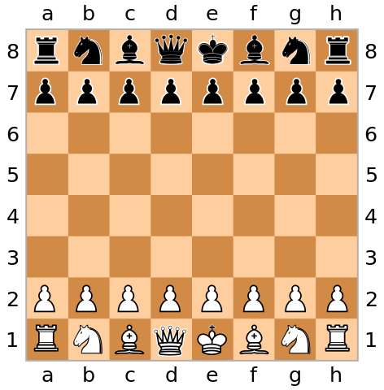

It’s intuitively plausible that pairwise independence of a set of variables implies joint independence. Sadly, it’s not true. Not everyone seems to know my favourite simple example, a chessboard: (image credit) 
If you pick a point uniformly at random from the chessboard (or just pick a square uniformly at random), the row, column, and colour are pairwise independent. The row and column are independent because of uniform sampling; in any row, the colour is independent of the \(x\)-coordinate; in any column, the colour is independent of the \(y\)-coordinate. However, the row and column together completely determine the colour, so we don’t have joint independence.
It’s fairly common to see what’s effectively a \(2\times 2\) version of this example: \(X\) and \(Y\) independent binary variables and \(Z= I(X \neq Y)\). I think the chessboard is better, because chessboards are actually a thing that many people have encountered in real life.
The chessboard generalises to higher dimensions, in a way that is no long familiar from real life but I think is still relatively easy to imagine. If you have alternating black and white cubes stacked into a big cube, and you pick a point uniformly at random, any three of the row, column, layer, and colour are independent, but not all four.
{kind=link}